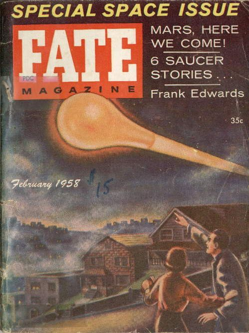
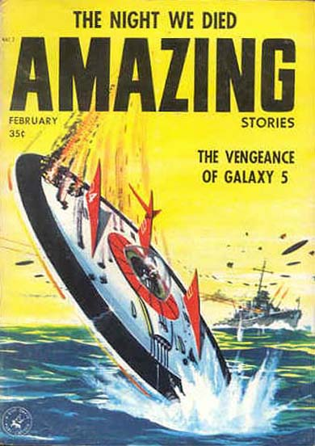

Couverture de Fate en février

Couverture de Amazing Stories ce mois-ci, titrant sur "La vengeance de la Galaxie" et montrant
une soucoupe descendue par un navire de guerre

Parution du 1er numéro de LDLN.
Les vues prises le 16 janvier à l'île de la Trinité, ainsi que leur histoire,
font la Une du Correio da Manha de Rio de Janeiro.
L'agence UP de Rio achète le récit et les photos de l'île de la Trinité, s'assure que le ministère de
la Marine brésilien atteste bien de leur authenticité et les diffuse internationalement.